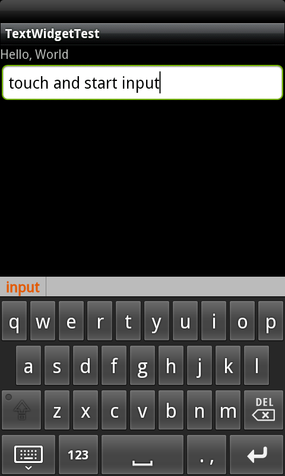
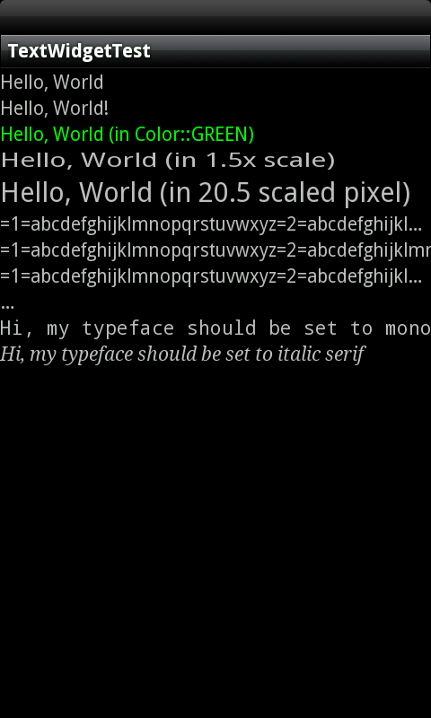
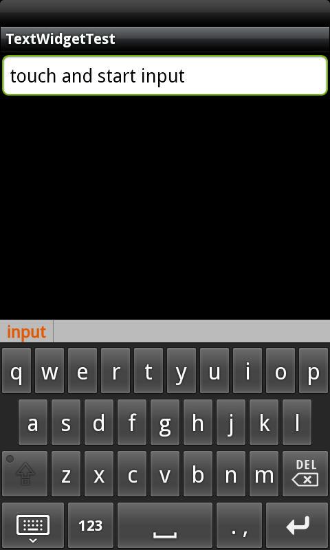
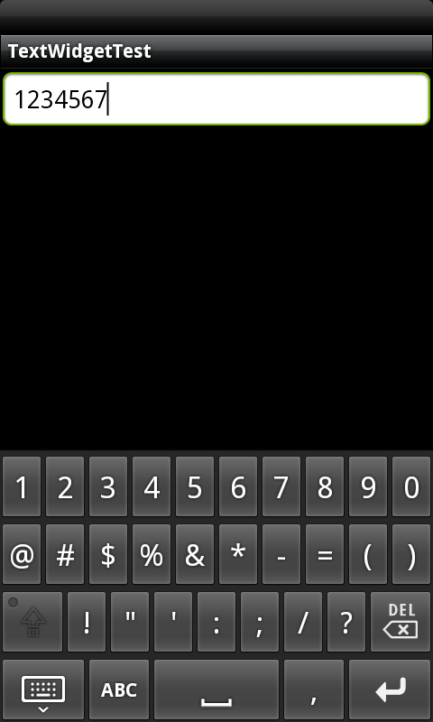
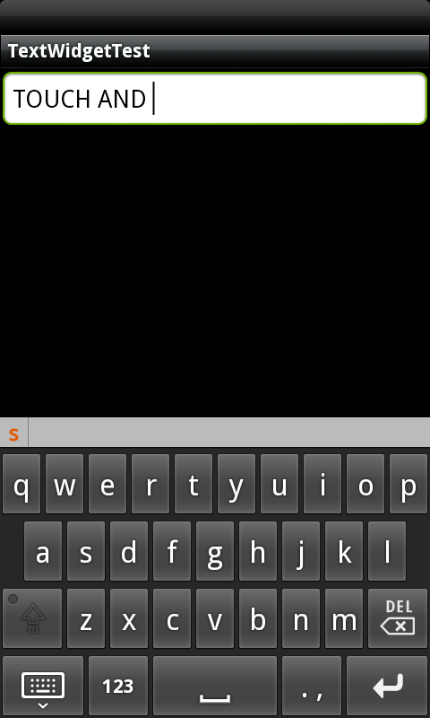
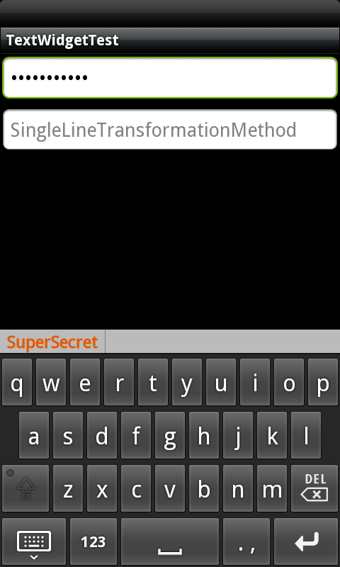
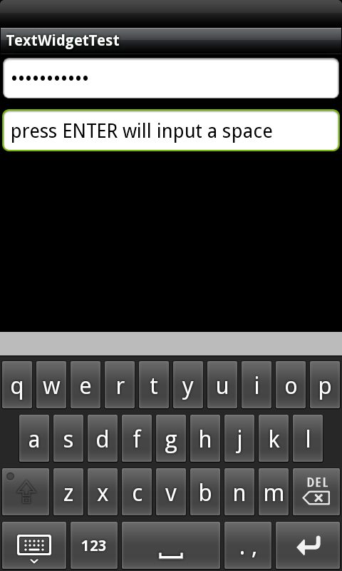

In a Gaia application, you can use TextWidget to display text to the user, and you can use EditWidget to display text which is editable. Actually, TextWidget itself is a complete text editor but pre-configured to not allow editing, and EditWidget is pre-configured to allow editing by default.
Here comes a basic usage of TextWidget and EditWidget, which demonstrated two of the fundamental functions: setText() and setHint().
void TextWidgetTest::onInit(Persistence* const savedInstanceState) {
// ask gaia framework to create a Scene for us
Scene* pScene = Scene::SceneFactory(static_cast<Page*>(this));
// construct a TextWidget and set it's text to "Hello, World"
TextWidget* pTextWidget = new TextWidget(static_cast<Page*>(this));
pTextWidget->setText("Hello, World");
// construct a EditWidget and set it's hint text to "Please
// enter something here:"
EditWidget* pEditWidget = new EditWidget(static_cast<Page*>(this));
pEditWidget->setHint("Please enter something here:");
// construct LinearController to contain/control our widgets
LinearController* pCtrl = new LinearController(static_cast<Page*>(this));
pCtrl->setOrientation(LinearController::VERTICAL);
pCtrl->addWidget(pTextWidget);
pCtrl->addWidget(pEditWidget);
// attach the LinearController and install the content on the Scene
pScene->attachAndSetupSceneLayout(pCtrl);
}
void TextWidgetTest::onTear() {
// get the Scene created by gaia framework
Scene* pScene = getSceneSingleton();
// ask gaia framework to delete itself and the WidgetController
// attached to it, and WidgetController will delete all it's
// child Widgets and WidgetController
pScene->SceneDestroy();
}

In this example, we provide basic usages of Scene and WidgetController(LinearController) as well so that you can see a more completed example, but in the following examples, we will focus on TextWidget and EditWidget themselves instead.
Example:
TextWidget* pTextWidgetF = new TextWidget(static_cast<Page*>(this));
pTextWidgetF->setText("Hello, World");
pTextWidgetF->append(" text appended");
TextWidget* pTextWidgetG = new TextWidget(static_cast<Page*>(this));
pTextWidgetG->setText("Hello, World");
pTextWidgetG->append(" text appended", 5, 14); // only last 9
// chars are appended ("appended")
Result:
You can use functions TextWidget itself provides to style whole paragraph of text you set using setText(), but if you would like to style individual spans of text, you can pass SpannedString, SpannableString, or SpannableStringBuilder to setText().
Example:
TextWidget* pTextWidgetA = new TextWidget(static_cast<Page*>(this));
pTextWidgetA->setText("Hello, World");
TextWidget* pTextWidgetB = new TextWidget(static_cast<Page*>(this));
pTextWidgetB->setText(R::string::hello_world);
TextWidget* pTextWidgetC = new TextWidget(static_cast<Page*>(this));
pTextWidgetC->setText("Hello, World (in Color::GREEN)");
pTextWidgetC->setTextColor(Color::GREEN);
TextWidget* pTextWidgetD = new TextWidget(static_cast<Page*>(this));
pTextWidgetD->setText("Hello, World (in 1.5x scale)");
pTextWidgetD->setTextScaleX(1.5);
TextWidget* pTextWidgetE = new TextWidget(static_cast<Page*>(this));
pTextWidgetE->setText("Hello, World (in 20.5 scaled pixel)");
pTextWidgetE->setTextSize(20.5);
TextWidget* pTextWidgetH = new TextWidget(static_cast<Page*>(this));
pTextWidgetH->setText("=1=abcdefghijklmnopqrstuvwxyz=2=abcdefghijklmnopqrstuvwxyz=3=abcdefghijklmnopqrstuvwxyz=4=abcdefghijklmnopqrstuvwxyz");
pTextWidgetH->setSingleLine(true);
pTextWidgetH->setEllipsize(TextWidget::END);
TextWidget* pTextWidgetI = new TextWidget(static_cast<Page*>(this));
pTextWidgetI->setText("=1=abcdefghijklmnopqrstuvwxyz=2=abcdefghijklmnopqrstuvwxyz=3=abcdefghijklmnopqrstuvwxyz=4=abcdefghijklmnopqrstuvwxyz");
pTextWidgetI->setSingleLine(true);
pTextWidgetI->setEllipsize(TextWidget::MARQUEE);
TextWidget* pTextWidgetJ = new TextWidget(static_cast<Page*>(this));
pTextWidgetJ->setText("=1=abcdefghijklmnopqrstuvwxyz=2=abcdefghijklmnopqrstuvwxyz=3=abcdefghijklmnopqrstuvwxyz=4=abcdefghijklmnopqrstuvwxyz");
pTextWidgetJ->setSingleLine(true);
pTextWidgetJ->setEllipsize(TextWidget::MIDDLE);
TextWidget* pTextWidgetK = new TextWidget(static_cast<Page*>(this));
pTextWidgetK->setText("=1=abcdefghijklmnopqrstuvwxyz=2=abcdefghijklmnopqrstuvwxyz=3=abcdefghijklmnopqrstuvwxyz=4=abcdefghijklmnopqrstuvwxyz");
pTextWidgetK->setSingleLine(true);
pTextWidgetK->setEllipsize(TextWidget::START);
TextWidget* pTextWidgetL = new TextWidget(static_cast<Page*>(this));
pTextWidgetL->setTypeface(*Typeface::MONOSPACE());
pTextWidgetL->setText("Hi, my typeface should be set to monospace");
TextWidget* pTextWidgetM = new TextWidget(static_cast<Page*>(this));
pTextWidgetM->setTypeface(*Typeface::SERIF(), Typeface::ITALIC);
pTextWidgetM->setText("Hi, my typeface should be set to italic serif");
Result:

Example:
EditWidget* pEditWidget = new EditWidget(static_cast<Page*>(this));
pEditWidget->setHint("You will not see cursor inside this EditWidget");
pEditWidget->setHintTextColor(Color::BLUE);
pEditWidget->setCursorVisible(false);

Example:
EditWidget* pEditWidgetDKL = new EditWidget(static_cast<Page*>(this));
DigitsKeyListener* pDKListener = DigitsKeyListener::getInstance();
// pEditWidgetDKL will accept digits input only
pEditWidgetDKL->setKeyListener(*pDKListener);
pEditWidgetDKL->setHint("DigitsKeyListener");
Result:

Example:
EditWidget* pEditWidgetIF = new EditWidget(static_cast<Page*>(this));
InputFilter* pLFilter = new LengthFilter(10);
InputFilter* pACFilter = new AllCaps();
pEditWidgetIF->addInputFilter(*pLFilter);
pEditWidgetIF->addInputFilter(*pACFilter);
pEditWidgetIF->setHint("length <= 10, AllCaps");
// delete pLFilter and pACFilter somewhere
Result:

Example:
EditWidget* pEditWidgetAKMM = new EditWidget(this);
MovementMethod* pAKMMethod = ArrowKeyMovementMethod::getInstance();
pEditWidgetAKMM->setMovementMethod(*pAKMMethod);
pEditWidgetAKMM->setHint("ArrowKeyMovementMethod");
Example:
EditWidget* pEditWidgetPTM = new EditWidget(static_cast<Page*>(this));
TransformationMethod* pPTMethod = PasswordTransformationMethod::getInstance();
pEditWidgetPTM->setTransformationMethod(*pPTMethod);
pEditWidgetPTM->setHint("PasswordTransformationMethod");
EditWidget* pEditWidgetSLTM = new EditWidget(static_cast<Page*>(this));
TransformationMethod* pSLTMethod = SingleLineTransformationMethod::getInstance();
pEditWidgetSLTM->setTransformationMethod(*pSLTMethod);
pEditWidgetSLTM->setHint("SingleLineTransformationMethod");
Result:
 